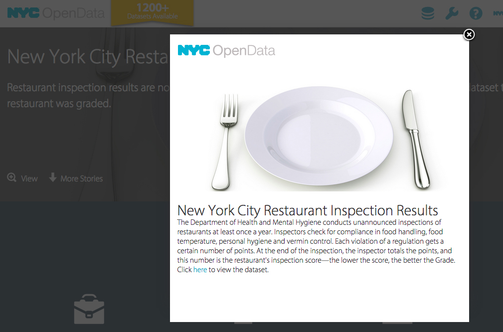
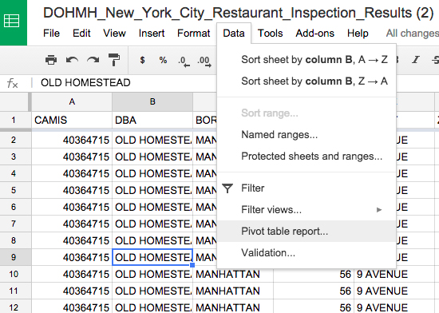
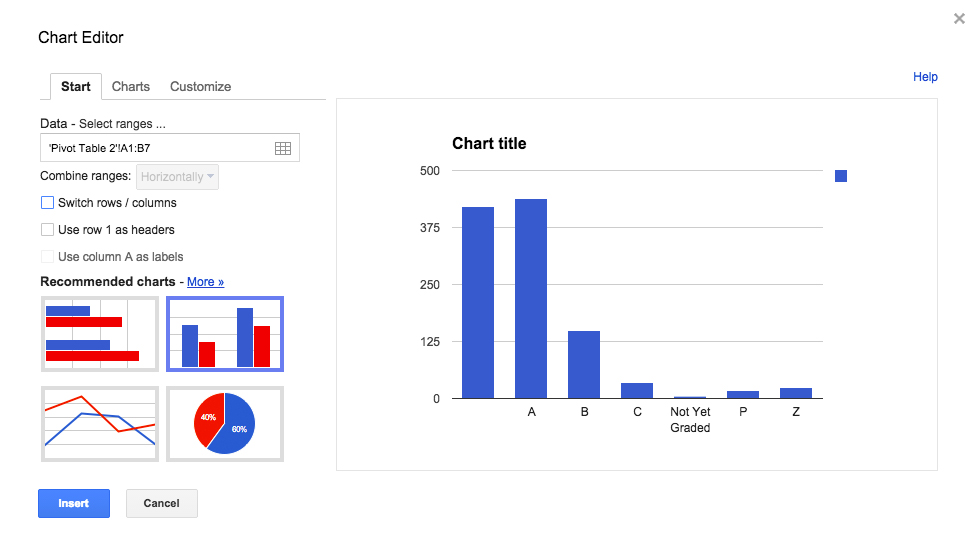

Spreadsheets Lab
1. Go to NYC Open Data
2. Find the New York City Restaurant Inspection Results.
3. You should get to a page that looks like this:
4. Since this is a big dataset, we're going to filter it to just the New School neighborhood.
5. Go to the Filter drodown, and add a new filter condition of Zip Code: 10011. Make sure the little checkbox is checked.
6. Now we're going to export the data to our own computers. Click on Export, and select CSV (who knows what CSV stand for?).
7. Make a new Google Spreadsheet.
8. Import the NYC Restaurant Inspection data that we just saved.
You should end up with this:
9. Freeze the top row, so that you can see all the headers when you scroll down.

10. Poke around a little bit. What do all the columns mean?
11. Let's find out for sure. Go to the "About" section, and click on "View Full Page."
12. Download the 2 attachments. What do the grades mean? What about scores? Is a high or low score better?
13. Back to our Google spreadsheet. We're going to try to figure out how many restaurants are in each grade category. Click on Data > Pivot Table report.
14. In the Rows section, add Grade. In the Values section, add CAMIS. (Why? What does CAMIS mean? Look back at the data dictionary.)
15. Does this give us the answer we need? Why or why not?
16. Go back and Summarize by COUNTUNIQUE. We also don't need the totals.
17. Chart it! What form would you pick for this data?
18. EXTRA: What's the breakdown of restaurants by Score? Use the same strategy to find out and chart your data.